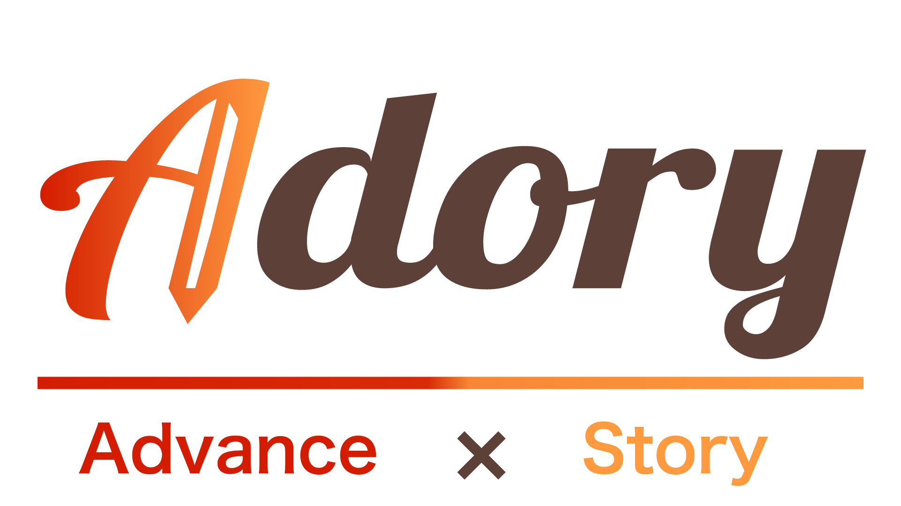

ホーム › 会社概要
Company
会社概要
皆が物語の主人公で、一歩でも人生が豊かに前進するように。
Vision
皆が物語の主人公で
一歩でも人生が豊かに前進するように
「Adory」という社名は Advance（前進）× Story（物語）の造語。
「皆が物語の主人公で、一歩でも人生が豊かに前進するように」という想いを込めています。

Mission
痛みを抱えても、前進できる社会へ
私たちは身体・心・社会に存在するあらゆる痛みをデータ化し、
ケアや支援につなげる仕組みを構築します。
働く人と組織の持続可能性を高め、安心して働き続けられる社会を実現します。
Company Profile
会社概要
会社名
株式会社Adory（アドリー）
設立
2025年4月14日
代表者
代表取締役CEO 本田 卓也
事業内容
安全管理型SaaS事業
建設・運送・物流・介護などの現場仕事に特化
建設・運送・物流・介護などの現場仕事に特化
所在地
〒142-0063 東京都品川区荏原6-1-9
東急目黒線 西小山駅 徒歩7分
東急目黒線 西小山駅 徒歩7分
Cycle
Adoryが目指す、現場安定の好循環
単なるツールではなく、現場が回り始めるサイクルをつくることを目指しています。
01
① 痛みの可視化
会社が見てくれているという安心感が生まれ、現場の状況が把握できるようになります。
02
② リスクの早期把握
労災・離職リスクの兆候を早めに検知し、対応を検討できます。長く働き続けられる環境につながります。
03
③ 採用の好転
「良い職場」という評価が現場から広がり、稼働率が安定します。採用コストの削減にもつながります。
04
④ 管理体制の強化
対応記録の蓄積により、経緯を説明できる状態で経営できます。コンプライアンス体制が整います。
従業員・企業・社会の三者が同時に恩恵を受ける循環構造を目指しています。
従業員は痛みが可視化され安心して働ける。企業は稼働率と売上を確保できる。社会は労働力不足の緩和とインフラの持続につながる。
従業員は痛みが可視化され安心して働ける。企業は稼働率と売上を確保できる。社会は労働力不足の緩和とインフラの持続につながる。